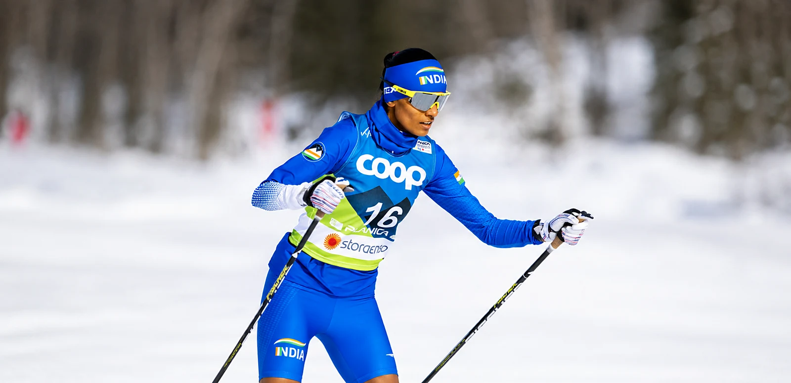

Indian cross-country skierThe long wayto snow
Level of competition. 3 World Cup starts. 2 World Championships. 1 Asian Games. 3 International medals. 20 National medals.

“When the path doesn’t exist,build one.”
From the coffee estates of Kodagu to international start lines, Bhavani Thekkada has built a career across mountains, continents and seasons.
In a sport with few established pathways in India, she became the country’s first woman to win an international cross-country skiing medal. Now, she is building towards what comes next.

Who she is
It started with a film, and a race on television.
In 2013, a Bollywood film sparked Bhavani’s curiosity about the mountains. An NCC mountaineering camp in Manali followed, leading her into mountaineering, then to work as an instructor in Darjeeling, and eventually to Kashmir, where she first discovered skiing.
In 2018, while training in alpine skiing in Kashmir, she watched Norwegian legend Marit Bjørgen race cross-country at the Winter Olympics. It was her first glimpse of the sport, and the idea stayed with her.
Two years later, Bhavani finally had the chance to try cross-country skiing herself. What began as curiosity quickly became something more. In 2021, she made the decision to pursue the sport full-time.
Behind that decision was a simple philosophy she had grown up with. Her father, Thekkada Nanjunda, who has spent his life on the family coffee farm, never asked her to follow the conventional path.
His advice was simple. If it makes you happy, do it.
- Born
- 14 May 1995 · Kodagu, Karnataka
- Mentored by
- Shiva Keshavan · Six-time Olympian, Luge
- Trains across
- Indian Himalayas · Europe · South America · New Zealand · Asia

The sport
Cross-countryskiing
A Nordic discipline
Endurance racing on snow.
Cross-country skiing is built around two techniques, Classic and Freestyle, raced across formats ranging from explosive sprints to demanding distance events.
Bhavani competes across both techniques and formats, with her competitive experience so far spanning races from 5 km to 21 km.
Two techniques
Classic
Traditional diagonal-stride technique.
Freestyle
A faster, skating-based technique.
Two race formats
Sprint
Short, high-intensity racing, typically around 1–1.6 km.
Distance
Endurance racing across longer courses, from 5 km to 50 km and beyond.

Join me on my journey to the 2030 French Alps Olympic Winter Games
Cross-country skiing
View journeyMedia
Press and photographs
Coverage from Indian and international outlets, and the season’s photographs from her own archive.
View media